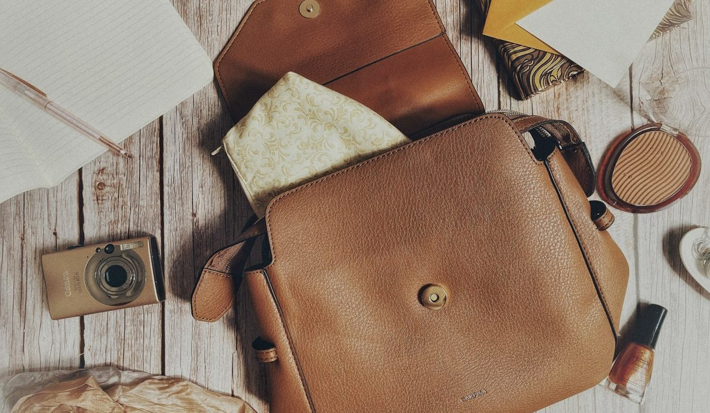
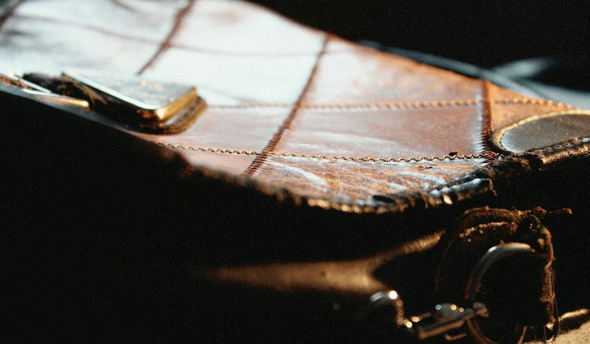

En bref
Pour qu'un sac en cuir dure dix ans, il faut le dépoussiérer chaque semaine, le nourrir tous les 3 à 4 mois avec une crème adaptée à son cuir et le ranger bourré dans un pochon en coton, à l'abri de la lumière. Le cuir grainé, noté 8,8/10 pour sa facilité d'entretien, pardonne presque tout. Le nubuck et le velours (6,1 et 5,8/10) demandent une brosse et un imperméabilisant, jamais de crème grasse.
- Un sac en cuir lisse perd sa souplesse en 18 à 24 mois sans nourrissage, quand il est porté tous les jours
- Une crème nourrissante s'applique en couche fine, 3 à 4 fois par an, et sèche 12 heures avant de reporter le sac
- Une tache de gras se traite dans l'heure à la terre de Sommières, laissée 24 heures avant brossage
- Changer des anses chez un cordonnier maroquinier coûte en général de 65 à 140 € selon la longueur et le cuir
Sommaire de ce guide
Nos critères et leur poids
Tous les cuirs ne demandent pas le même soin, et c'est souvent là que tout se joue. Une crème parfaite pour un cuir lisse tache un nubuck pour de bon. Nous avons noté chaque cuir sur sa facilité d'entretien au quotidien, avec quatre critères.
| Critère | Poids | Ce que nous regardons |
|---|---|---|
| Facilité d'entretien | 35 % | Le temps et le matériel nécessaires chaque mois, et le risque d'erreur |
| Résistance à l'eau | 25 % | La tenue face à une averse de dix minutes et aux auréoles |
| Tenue aux rayures | 20 % | La visibilité des marques d'ongle, de clés et de frottement |
| Réparabilité | 20 % | Ce qu'un cordonnier maroquinier sait rattraper, teinte et texture comprises |
Total 100 %. Notes établies sur un usage quotidien en ville, sans housse de pluie.
L'entretien par type de cuir
Avant toute chose, identifiez votre cuir. L'étiquette intérieure ou la fiche produit le dit presque toujours, et le toucher confirme. Un cuir qui marque sous l'ongle et fonce au contact du doigt mouillé est un nubuck ou un velours. Un cuir qui reste brillant et froid est lisse, verni ou saffiano.
| Type de cuir | Note /10 | Produit | Fréquence | Erreur à éviter | Le point fort |
|---|---|---|---|---|---|
| Cuir grainéNotre choix | 8,8 | Lait ou crème neutre | Tous les 4 mois | Frotter fort une tache, le grain se lustre | Cache les rayures du quotidien |
| Cuir saffiano | 8,5 | Lait hydratant, chiffon humide | Tous les 6 mois | Une crème grasse qui laisse un film | Quasi insensible à l'eau |
| Cuir lisse | 7,8 | Crème nourrissante incolore | Tous les 3 mois | Le laisser sécher près d'un radiateur | Se patine et se rénove bien |
| Cuir tannage végétal | 7,4 | Baume à la cire d'abeille | Tous les 3 mois | L'exposer au soleil les premières semaines | La plus belle patine |
| Cuir verni | 6,9 | Lait pour cuir verni, chiffon doux | Tous les 2 mois | Le ranger contre un plastique ou un autre verni | Brillance facile à raviver |
| Cuir d'agneau plongé | 6,3 | Lait très léger | Tous les 3 mois | Le porter avec un jean brut neuf | Souplesse et toucher |
| Nubuck | 6,1 | Brosse crêpe, spray imperméabilisant | Brossage hebdomadaire | Appliquer une crème ou de l'eau | Mat profond, effet velouté |
| Velours (croûte) | 5,8 | Gomme et brosse laiton douce | Brossage hebdomadaire | Le sortir sans imperméabilisant | Couleurs intenses |
Note de facilité d'entretien sur 10, établie sur 8 cuirs courants de la maroquinerie féminine. Fréquences pour un sac porté 4 à 5 jours par semaine. Notes et prix, relevé de démonstration du 8 octobre 2026.
Le grainé arrive en tête pour une raison simple. Son relief disperse la lumière, donc une rayure ou une petite auréole ne se voit pas. C'est le cuir que nous conseillons à qui porte son sac tous les jours et n'a pas envie d'y penser. Le tannage végétal, à l'inverse, réclame de l'attention la première année, puis récompense avec une patine qu'aucun autre cuir n'offre.
La routine de base, quel que soit le cuir
- Videz le sac chaque semaine et secouez-le à l'envers, les miettes et le sable usent la doublure de l'intérieur.
- Dépoussiérez l'extérieur avec un chiffon de coton sec ou une brosse en crin pour les cuirs lisses.
- Tous les trois à quatre mois, testez le produit sur une zone cachée, sous une anse ou au fond, puis appliquez une couche fine en mouvements circulaires.
- Laissez sécher 12 heures à plat, loin d'une source de chaleur, et lustrez au chiffon propre.
Taches et pluie, les gestes qui sauvent un sac
La plupart des sacs ne meurent pas d'usure. Ils meurent d'une tache traitée trop tard ou trop fort. Trois cas couvrent la plupart des accidents, et chacun a son geste.
La tache de gras
Huile de salade, crème pour les mains, frite tombée sur le rabat. Ne mouillez surtout pas. Saupoudrez de terre de Sommières ou, à défaut, de talc, laissez agir 24 heures, puis brossez. Sur un cuir lisse clair, il faut parfois deux applications. Une tache de gras vieille de quelques semaines relève du professionnel.
L'encre et le maquillage
Un stylo ouvert au fond du sac, un rouge à lèvres sur la doublure. Sur cuir lisse et verni, un lait démaquillant doux sur un coton, en tapotant, retire une marque fraîche. Sur cuir clair non fini, l'encre pénètre en quelques minutes et ne part plus sans reteinte. Rangez les stylos dans une trousse, ça coûte moins cher qu'une rénovation.
La pluie
Épongez immédiatement en tamponnant avec une serviette, sans frotter. Bourrez le sac de papier de soie blanc pour qu'il garde sa forme, puis laissez-le sécher à température ambiante, jamais sur un radiateur ni au sèche-cheveux. Le cuir sèche de l'extérieur et se rétracte, d'où les craquelures. Une fois sec, nourrissez-le légèrement.
La prévention coûte moins cher que le séchage. Un spray imperméabilisant incolore, appliqué à 20 cm du sac sur un cuir propre, protège pendant six à huit semaines. Renouvelez-le à chaque changement de saison, et après chaque nettoyage. Sur un cuir verni ou saffiano, il ne sert presque à rien, leur surface est déjà fermée.

Mon sac a passé huit ans sur mon épaule. Le seul vrai secret, c'est de ne jamais le laisser sécher contre le radiateur après une averse. Une lectrice, 52 ans, Bordeaux.
Ranger son sac pour qu'il garde sa forme
Un sac passe plus de temps posé que porté. Le rangement décide donc autant de sa durée de vie que l'entretien.
- Bourrez-le de papier de soie ou d'un petit coussin, jamais de papier journal dont l'encre migre sur les cuirs clairs.
- Glissez-le dans le pochon en coton fourni, qui laisse respirer le cuir, et jamais dans une housse en plastique qui retient l'humidité.
- Rangez-le debout sur une étagère, pas suspendu par les anses, qui s'étirent de quelques millimètres en quelques mois.
- Évitez la lumière directe, qui fonce le tannage végétal et décolore les teintes vives en une saison.
- Laissez la chaîne ou la bandoulière métallique à l'intérieur du pochon, à l'écart du cuir, pour éviter les marques.
Un sac rangé six mois mérite une petite remise en route. Aérez-le une journée, dépoussiérez, puis appliquez un lait léger avant de le reporter.
Une dernière précaution concerne les couleurs. Deux sacs rangés l'un contre l'autre peuvent déteindre, surtout un cuir clair contre un cuir rouge ou un verni. Un pochon par sac règle la question. Faute de pochon, une vieille taie d'oreiller en coton fait très bien l'affaire.
Quand passer chez un cordonnier maroquinier
Certaines réparations dépassent le chiffon et la crème. Un cordonnier spécialisé en maroquinerie, ou l'atelier de réparation de la maison quand elle en propose un, rend à un sac fatigué plusieurs années de vie. Voici les tarifs que nous avons relevés auprès d'ateliers parisiens et lyonnais.
| Réparation | Prix constaté | Délai | Quand l'envisager |
|---|---|---|---|
| Recoudre une couture d'anse | 18 à 35 € | 2 à 5 jours | Dès qu'un point lâche, avant que le fil ne file |
| Reteinte des tranches | 35 à 70 € | 1 semaine | Quand la tranche s'écaille aux angles |
| Remplacer une fermeture éclair | 45 à 95 € | 1 à 2 semaines | Curseur qui saute ou dents cassées |
| Changer les anses | 65 à 140 € | 2 à 3 semaines | Anses craquelées ou étirées |
| Rénovation et reteinte complète | 120 à 260 € | 3 à 4 semaines | Couleur passée, auréoles anciennes |
| Remplacer la doublure | 90 à 180 € | 3 semaines | Doublure déchirée ou tachée d'encre |
Fourchettes constatées en octobre 2026 dans six ateliers de cordonnerie et maroquinerie, hors sacs à la quincaillerie spécifique.
La règle est simple. Une couture qui lâche se recoud tout de suite, pour 20 € environ. Attendre, c'est laisser le cuir se déchirer à l'endroit des trous, et la réparation passe alors à plus de 100 €.

Comment adapter l'entretien à votre usage
La fréquence du tableau vaut pour un sac porté quatre à cinq jours par semaine. Elle change avec la vie que mène le sac.
Le sac du quotidien
Il prend la pluie, le métro et le fond de bureau. Dépoussiérage chaque semaine, nourrissage tous les trois mois, imperméabilisant en spray à l'automne. Un cuir grainé ou saffiano facilite tout.
Le sac du soir
Porté une fois par mois, il souffre surtout du rangement. Pochon en coton, papier de soie, et un lait léger deux fois par an suffisent.
Le sac de voyage
Il voyage dans les soutes et les porte-bagages. Protégez le fond avec des pieds métalliques s'il n'en a pas, appliquez un imperméabilisant avant chaque départ et videz-le dès le retour.
Notre verdict
Un sac en cuir dure dix ans avec trois gestes. Un dépoussiérage chaque semaine, une crème adaptée à son cuir tous les trois à quatre mois, et un rangement bourré dans un pochon en coton, loin de la lumière et du radiateur. Le reste se règle chez un cordonnier maroquinier, de préférence dès le premier point qui lâche.
Si votre priorité est la tranquillité, choisissez un cuir grainé ou saffiano, qui supporte la pluie et cache les rayures. Si votre priorité est la patine, prenez un tannage végétal et acceptez une première année attentive. Si vous aimez le nubuck ou le velours, gardez une brosse dans l'entrée et un spray imperméabilisant à portée de main.
Questions fréquentes
À quelle fréquence faut-il nourrir un sac en cuir ?
Un sac en cuir lisse ou tannage végétal se nourrit tous les 3 mois s'il est porté chaque jour. Un cuir grainé se contente d'un passage tous les 4 mois, un saffiano tous les 6 mois. Le nubuck et le velours ne se nourrissent jamais à la crème, ils se brossent chaque semaine.
Est-ce qu'on peut utiliser du lait démaquillant sur un sac en cuir ?
Oui, un lait démaquillant doux nettoie un cuir lisse ou verni et retire une marque d'encre ou de maquillage fraîche. On l'applique en tapotant sur un coton, après un test sur une zone cachée. Il ne convient pas au nubuck ni au velours, qu'il tache.
Comment faire sécher un sac en cuir mouillé par la pluie ?
Il faut éponger le sac en tamponnant avec une serviette, le bourrer de papier de soie blanc et le laisser sécher à température ambiante. Un radiateur ou un sèche-cheveux rétracte le cuir et provoque des craquelures. Une fois sec, un lait nourrissant léger lui rend sa souplesse.
Comment enlever une tache de gras sur un sac en cuir ?
Une tache de gras se traite dans l'heure avec de la terre de Sommières ou du talc, laissés 24 heures avant un brossage doux. Il ne faut ni eau ni savon, qui fixent la graisse dans le cuir. Une tache ancienne de quelques semaines demande un cordonnier maroquinier, pour 35 à 70 € environ.
Combien coûte la réparation d'un sac en cuir chez un cordonnier ?
Recoudre une couture coûte de 18 à 35 €, remplacer une fermeture éclair de 45 à 95 € et changer des anses de 65 à 140 €. Une rénovation complète avec reteinte se situe entre 120 et 260 €. Ces fourchettes ont été constatées en octobre 2026 dans des ateliers parisiens et lyonnais.
Comment sont notés les types de cuir ?
Chaque cuir est noté sur quatre critères, la facilité d'entretien (35 %), la résistance à l'eau (25 %), la tenue aux rayures (20 %) et la réparabilité (20 %). Le cuir grainé obtient la meilleure note avec 8,8/10. Les notes et les tarifs proviennent d'un relevé de démonstration du 8 octobre 2026.
Notre méthode
Ce classement repose sur des relevés faits sur les sites officiels et en boutique, refaits chaque mois.
- Les prix sont relevés sur les sites officiels des marques en France, hors soldes et hors code promo, à la date indiquée
- Les matières, l'origine de fabrication et les dimensions sont celles affichées sur les fiches produit
- Chaque sac est porté et rempli en conditions réelles, ordinateur, trousse, gourde et parapluie compris
- Les avis clients vérifiés sont lus un par un sur la tenue des anses, des coins et des finitions
- Les services (livraison, retours, réparation, seconde main) sont testés sur une commande réelle par marque